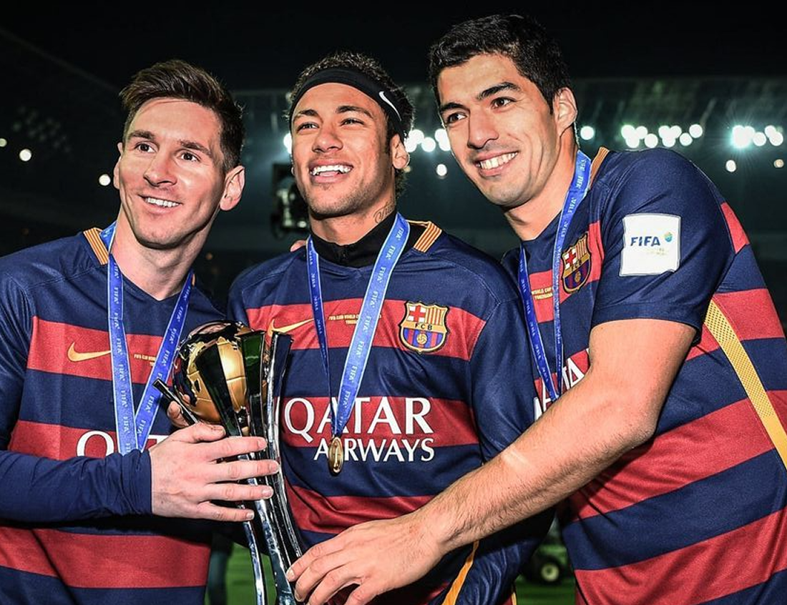
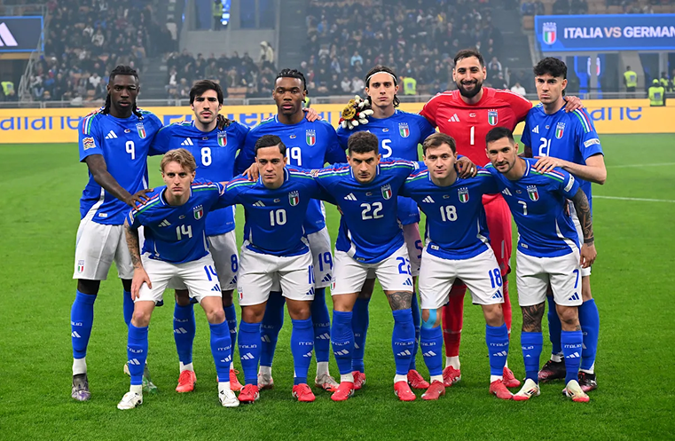

Футбольний клуб
Victory
Victory
Сила, характер і незламний дух. Ми грали на цьому полі з 2008 року — і кожен матч стає новою главою нашої історії.
Про нас
Серце чемпіона
З 2008
ФК Victory — аматорський клуб з характером переможця. Засновані групою ентузіастів, ми виросли в одну з найтитулованіших команд регіону. Кожен матч — це не просто гра, це наша ідентичність.
| Рік заснування | 2008 |
| Місто | Київ |
| Стадіон | Арена Перша |
| Ліга | Перша аматорська |
| Головний тренер | Олександр Сергієнко |
